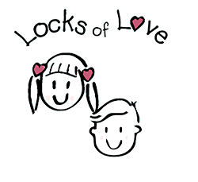
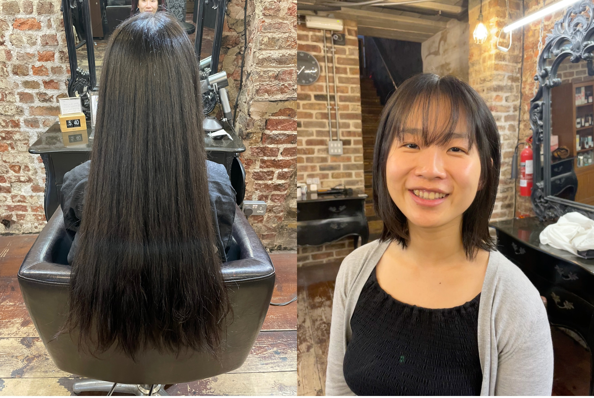
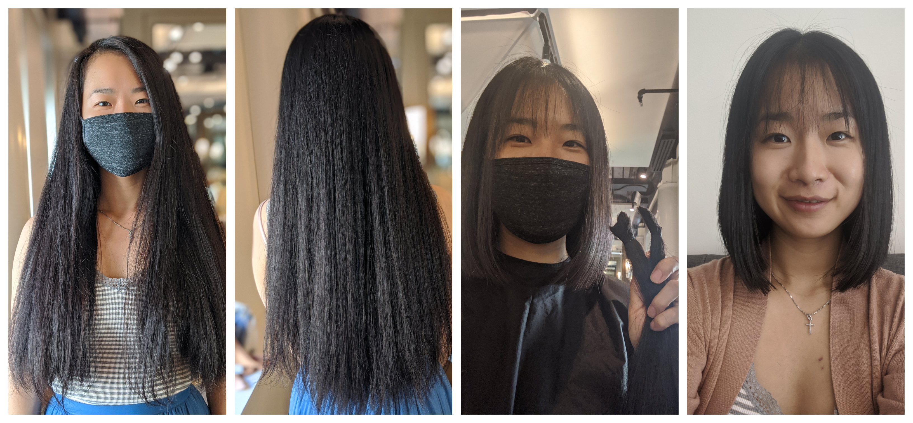
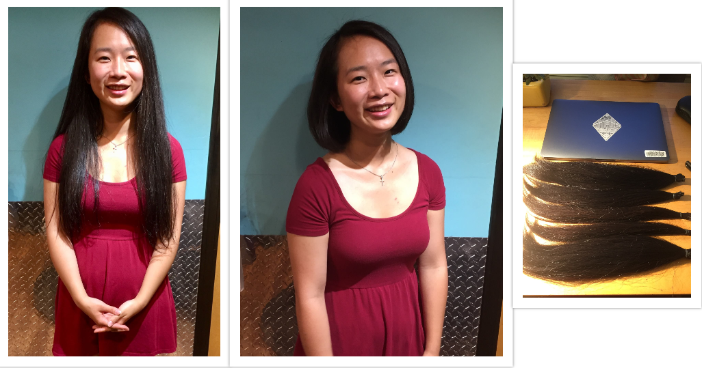

Some say hair is a crown that you never take off, but many adults and children battling illnesses resulting in alopecia (e.g. cancer) lose the opportunity to wear their crowns with a sense of pride. Children, especially, can be teased or bullied because of their hair loss and withdraw from social activities as a result. Since 2014, I have been donating my hair every two years. I created this page as a quick reference to how you can support the cause of empowering children dealing with hair loss.
Two awesome organizations I have donated to in the past include:
4 easy steps to donating your hair:
Most organizations do not accept synthetic hair, dreadlocks, or hair not tied up. Some organization do not accept colored or chemically treated hair
*Don't want to commit to growing hair this long? These organizations also deeply appreciate financial donations :)



Template from Bootstrapious